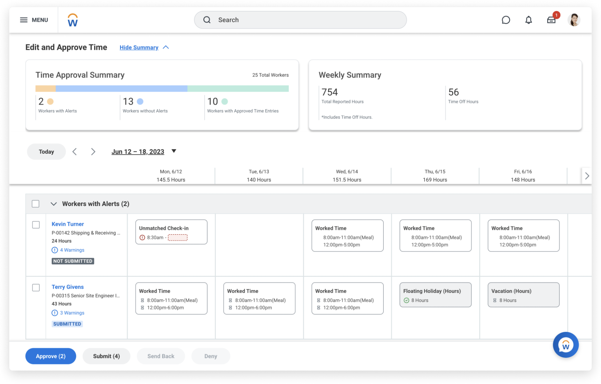

Time Anomalies | Workday
Overview
Millions of users enter hourly time during their shift every week using time management software. While most of the data entered reflects the actual worked time, mistakes are always possible. As part of the time approval process, managers and timekeepers spend valuable hours verifying user input.
As part of the Time and Scheduling Hub for managers, Workday Time Anomalies automatically reveals possible time-entry errors and alerts managers about unusual time entries. The goal is to save time and improve payroll and labor cost accuracy.
At Workday, I built out components of the Time Anomalies feature in collaboration with our machine learning team that would allow managers to detect these unusual time entries. I also worked to enhance the delivery of this information to users with the Time Approval Summary filters, which allows managers and supervisors to easily discern and sort through descrepancies with their worker's time.
To complete this project, I worked to ensure delivery of both features through an early adopter phase of limited customer opt-in to full general availability for all Time Tracking customers in Workday 2021.
Cited Information & details
1. Workday Time Management
2. Workday Payroll & Time Blog Post

Job Matcher | Project
Overview
This project was inspired by a friend who came to me with a problem. Recently laid off from a large
Seattle-area tech company, he was looking for a new job.
While there were many services to help find jobs, finding a good match with unique skills and
experiences required many hours manually parsing job descriptions for a good fit.
What if there was a service that could process and match your resume with related jobs and deliver a ranked list of results daily to aid your job search?
With that idea in mind, we worked together to create Job Matcher, a service that scraped job posting
websites and used natural language processing to compute similarities between the postings and user
resumes. It would prioritize skills (for example, Ruby or AWS Sagemaker) and return to the user a
set of matched jobs ranked by the machine learning model's scoring criteria daily. The job
position scraping and matching would be automated via a daily asyncronous API call to an EC2 instance so by the time
the user logged in, the results would already be persisted and presented to them on the client side.
Architecture
The application consists of several main components: The flask server handles the client interaction including user identification and metadata persistence (resume, email, etc.). To communicate with the MongoDB cluster, we exposed pathways via FastAPI to allow for new user creation, updating of user details, and getting the latest matched resumes. Depending on which API pathway is called, we utilize the SpaCy NLP library to look for skills in the jobs and calculate semantic similarity with the user's information.
Lessons Learned / Challenges
- Balancing application performance and functionality: The job scraping and matching for users involved compute-intensive operations. Using asychronous data processing not only alleviated server load but also improved the user experience.
- Choosing and configuring a lightweight database: A NoSQL database would allow us to quickly update user's jobs and delete old ones. It would also allow flexibility to change our schema as we prototyped.
- Algorithmic Choices: Tuning the machine learning's semantic matching ability and mixing it with programatic rules that boosted key-word matching involved trial and error.